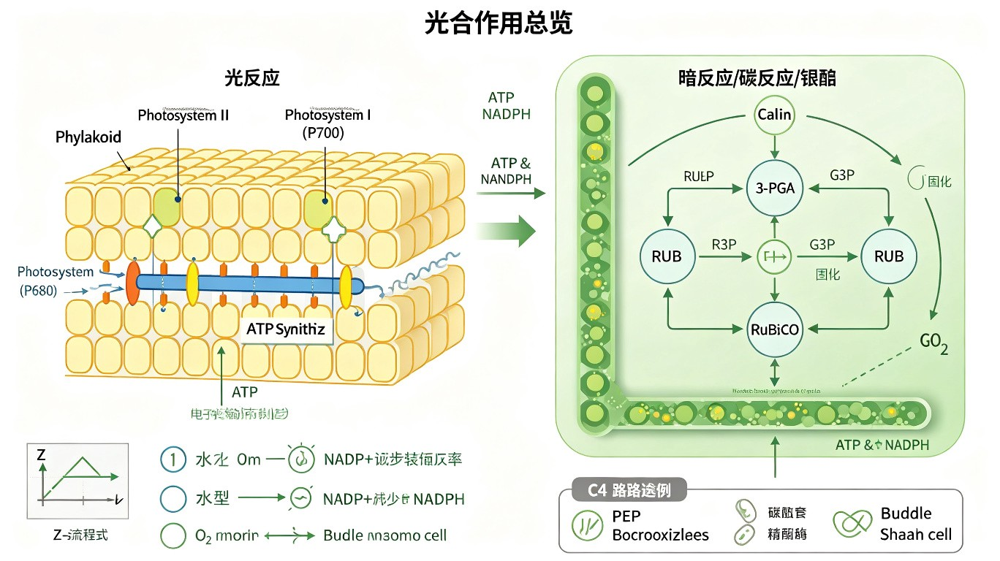

叶绿体的超微结构
叶绿体（chloroplast）是植物细胞和藻类进行光合作用的细胞器，属于质体（plastid）家族。叶绿体将光能转化为化学能（ATP 和 NADPH），并利用这些能量将 CO₂ 固定为有机物（Calvin 循环）。典型的叶绿体呈透镜状，直径约 5-10 μm，厚 2-4 μm。
叶绿体的超微结构（由外到内）：
- 外膜（outer membrane）：光滑，通透性较高，含有孔蛋白（porin）允许小分子（<10 kDa）自由通过。外膜还含有脂质合成酶系。
- 内膜（inner membrane）：通透性较低，是选择性屏障。含有多种转运蛋白，如TPT（磷酸丙糖/磷酸转运蛋白，triose phosphate/phosphate translocator）将 Calvin 循环产物 DHAP 输出至细胞质。内外膜之间为膜间隙。
- 类囊体（thylakoid）：由膜包被的扁平囊状结构，是光合作用光反应的场所。类囊体膜含有光合色素（叶绿素 a/b、类胡萝卜素）、电子传递链（PSII、Cyt b₆f、PSI）和 ATP 合酶。类囊体膜脂以单半乳糖二酰甘油（MGDG）和双半乳糖二酰甘油（DGDG）为主，还含少量磷脂（磷脂酰甘油 PG）。
- 基粒（granum，复数 grana）：多个类囊体堆叠在一起形成的柱状结构。基粒类囊体富含 PSII 和捕光复合体 II（LHCII），是光反应效率最高的区域。
- 基质（stroma）：内膜与类囊体之间的无定形胶体，含有 Calvin 循环的全部酶系（如 RuBisCO）、叶绿体 DNA（cpDNA）、叶绿体核糖体（70S）、淀粉粒等。
- 基质类囊体（stroma thylakoid）：不堆叠的类囊体，连接基粒，富含 PSI 和 ATP 合酶。

内共生起源的证据
内共生学说（endosymbiotic theory）由 Lynn Margulis 于 1967 年系统提出，认为线粒体和叶绿体起源于被原始真核细胞吞噬的细菌。叶绿体起源于蓝藻（cyanobacteria）的祖先。
叶绿体内共生起源的证据：
- 双层膜结构：叶绿体有内外两层膜，内层膜来源于蓝藻的质膜，外层膜来源于宿主细胞的吞噬体膜。注意：具有三层膜或四层膜的质体（如隐藻、定鞭藻的叶绿体）是二次内共生（secondary endosymbiosis）的结果。
- 环状 DNA：叶绿体有自己独立的环状双链 DNA（cpDNA），不含组蛋白，与蓝藻基因组相似。cpDNA 大小约 120-200 kb（因物种而异），编码约 100-120 个基因。
- 70S 核糖体：叶绿体核糖体为 70S（原核型），由 50S 大亚基 + 30S 小亚基组成。对氯霉素敏感（抑制原核型核糖体），对放线菌酮不敏感。
- 转录和翻译机制：叶绿体的 RNA 聚合酶、启动子结构、翻译起始（fMet-tRNA）等与原核生物相似。叶绿体 mRNA 通常无 5' 帽和 3' poly(A) 尾。
- 分裂方式：叶绿体通过二分裂（binary fission）增殖，分裂环由 FtsZ 蛋白（细菌分裂蛋白的同源物）组成。FtsZ 在叶绿体基质中组装成 Z 环，驱动分裂。
二次内共生：一个已含有初级叶绿体的真核藻类被另一个真核生物吞噬，形成具有三层或四层膜的质体。如隐藻（Cryptophyta）的叶绿体有四层膜，内两层来自蓝藻，外层来自宿主吞噬体膜，还有一层来自被吞噬藻类的质膜。隐藻叶绿体在内外膜之间还保留着退化了的真核细胞核——核形态（nucleomorph）。
叶绿体基因组与蛋白转运
叶绿体基因组（cpDNA/plastome）：环状双链 DNA，大小约 120-200 kb（不同物种差异大，高等植物约 120-160 kb）。编码约 100-120 个基因，包括 rRNA（16S, 23S, 5S, 4.5S）、tRNA（约 30 个）、光合作用蛋白（RuBisCO 大亚基 rbcL、PSI/PSII 组分、Cyt b₆f 组分、ATP 合酶亚基）和 RNA 聚合酶亚基等。叶绿体密码子与标准遗传密码相同，无偏离。
叶绿体蛋白质输入：叶绿体约 95% 的蛋白质由核基因编码，在细胞质 80S 核糖体合成后输入。转运复合体：
- TOC 复合体（translocon of the outer chloroplast membrane）：位于外膜，识别前体蛋白 N 端的转运肽（transit peptide，约 50 个氨基酸，富含 Ser/Thr 和少量酸性氨基酸）。Toc159/Toc34 是 GTP 依赖的受体，Toc75 是转运通道。
- TIC 复合体（translocon of the inner chloroplast membrane）：位于内膜，与 TOC 协同工作。Tic110 是主要通道蛋白，Tic40 辅助 Hsp93（基质分子伴侣）拉动前体蛋白。
- 类囊体蛋白的转运还有额外的途径：TAT 途径（twin-arginine translocation，转运折叠蛋白）、SRP 途径（signal recognition particle，转运 LHC 蛋白）和自发插入途径。
基质加工肽酶（SPP, stromal processing peptidase）：切除转运肽。类囊体腔蛋白还需经过类囊体加工肽酶（TPP）进行第二次切割。
光合作用概述
光合作用（photosynthesis）分为光反应（light reaction）和暗反应（dark reaction/Calvin cycle）。光反应在类囊体膜上进行，产生 ATP 和 NADPH；暗反应在基质中进行，利用 ATP 和 NADPH 将 CO₂ 固定为糖。
光反应——两个光系统：
- PSII（光系统 II，P680）：吸收光能→P680 被激发→电子传递给去镁叶绿素（pheophytin）→质体醌（PQ）→Cyt b₆f 复合体→质体蓝素（PC）→PSI。PSII 从 H₂O 获取电子（水裂解），释放 O₂（2H₂O → 4H⁺ + 4e⁻ + O₂）。水裂解复合体（OEC）含 Mn₄CaO₅ 簇。
- Cyt b₆f 复合体：与线粒体复合体 III 类似，通过 Q 循环将电子从 PQH₂ 传递给 PC，同时泵 H⁺ 进入类囊体腔。
- PSI（光系统 I，P700）：吸收光能→P700 被激发→电子传递给铁氧还蛋白（Fd）→Fd-NADP⁺ 还原酶（FNR）→NADP⁺ 还原为 NADPH。
光合磷酸化：与氧化磷酸化类似，电子传递产生的质子梯度（类囊体腔 pH 可降至 ~5，基质 pH ~8）驱动 ATP 合酶合成 ATP。分为非循环光合磷酸化（水→PSII→PSI→NADPH，产生 ATP + NADPH + O₂）和循环光合磷酸化（仅 PSI，Fd→Cyt b₆f→PC→PSI，仅产生 ATP）。
Calvin 循环（暗反应）：在基质中，RuBisCO 催化 CO₂ 与 RuBP（1,5-二磷酸核酮糖）结合，生成 2 分子 3-PGA（3-磷酸甘油酸），经还原和再生，净合成 1 分子 G3P（磷酸甘油醛）需消耗 9 ATP 和 6 NADPH（每固定 3 CO₂）。RuBisCO 是地球上最丰富的蛋白质，但催化效率极低（~3 s⁻¹）。
质体的类型与转化
质体（plastid）是植物细胞特有的细胞器家族，所有质体均来源于前质体（proplastid），存在于分生组织细胞中。根据功能和色素含量，质体可分为多种类型，且可在一定条件下相互转化。
质体主要类型：
- 前质体（proplastid）：未分化的质体前体，存在于分生组织细胞中，体积小（直径约 1 μm），内膜系统不发达。根据光照和发育信号分化为不同类型的质体。
- 叶绿体（chloroplast）：含叶绿素 a/b，进行光合作用。光照下，前质体→黄化质体→叶绿体。叶绿体也可由白色体或有色体转化而来。
- 黄化质体（etioplast）：黑暗条件下前质体分化形成的中间类型，含原片层体（prolamellar body），为类囊体膜前体。见光后原片层体迅速发育为类囊体，叶绿素合成启动，转变为叶绿体。
- 白色体（leucoplast）：无色质体，不含色素。根据储存物质不同分为：造粉体（amyloplast，储存淀粉）、造油体（elaioplast，储存油脂）、造蛋白体（proteinoplast，储存蛋白质）。
- 有色体（chromoplast）：含大量类胡萝卜素（胡萝卜素、叶黄素），呈黄色/橙色/红色。存在于花瓣、果实（如番茄、辣椒）中，吸引传粉者和种子传播者。叶绿体在果实成熟过程中可转化为有色体（叶绿素降解，类胡萝卜素积累）。
- 老质体（gerontoplast）：叶绿体在叶片衰老过程中退化形成的质体，类囊体膜解体，质体小球（plastoglobuli）积累。
质体转化的可逆性：前质体→叶绿体→有色体（不可逆，如番茄成熟）；叶绿体⇌白色体（可逆，如土豆块茎见光变绿）；前质体→黄化质体→叶绿体（光诱导）。
TPT 磷酸转运蛋白与穿梭机制：
TPT（triose phosphate/phosphate translocator）位于叶绿体内膜，是 Calvin 循环产物输出的关键转运蛋白。TPT 严格按 1:1 的比例将磷酸丙糖（DHAP/G3P）与无机磷酸（Pi）进行反向交换。Calvin 循环产生的磷酸丙糖通过 TPT 输出到细胞质，用于蔗糖合成；Pi 则被输入叶绿体基质以维持 ATP 合成。
苹果酸-草酰乙酸穿梭（malate-oxaloacetate shuttle）：叶绿体光合作用产生的 NADPH 不能直接穿过内膜，需要通过穿梭机制间接输出还原力。叶绿体基质中的草酰乙酸（OAA）被 NADPH-苹果酸脱氢酶还原为苹果酸，苹果酸通过内膜上的苹果酸/延胡索酸转运蛋白输出到细胞质，在细胞质中被氧化回 OAA，同时产生 NADH。这是叶绿体向细胞质输出还原力的重要机制。
本节必背考点
- 超微结构：外膜（porin）→ 内膜（TPT 转运蛋白）→ 类囊体（光反应，MGDG/DGDG 脂）→ 基质（Calvin 循环，RuBisCO，cpDNA）。基粒=类囊体堆叠，富含 PSII。
- 内共生证据：双层膜、环状 cpDNA（120-200 kb）、70S 核糖体、原核型转录翻译、二分裂（FtsZ）。二次内共生→三层/四层膜，核形态。
- 蛋白转运：TOC（外膜 Toc159/34/75）→ TIC（内膜 Tic110）。转运肽 N 端约 50 aa。类囊体蛋白：TAT/SRP/自发插入途径。
- 光反应：PSII（P680，水裂解产 O₂）→ PQ → Cyt b₆f → PC → PSI（P700）→ Fd → FNR → NADPH。非循环/循环光合磷酸化。
- Calvin 循环：RuBisCO 催化 CO₂+RuBP→2×3-PGA。每 3 CO₂ 消耗 9 ATP+6 NADPH。
- 质体转化：前质体→叶绿体/黄化质体/白色体/有色体。TPT 磷酸丙糖/Pi 反向交换。苹果酸-草酰乙酸穿梭输出还原力。
补充内容：C3、C4 与 CAM 植物比较
C3 植物（如水稻、小麦、大豆）：CO₂ 的初始固定产物为 3-磷酸甘油酸（3-PGA，3 碳化合物），由 RuBisCO 催化。所有过程在叶肉细胞叶绿体中进行。光呼吸（photorespiration）显著——RuBisCO 具有加氧酶活性，在高温/高 O₂ 条件下催化 RuBP 与 O₂ 反应，生成 1 分子 3-PGA 和 1 分子 2-磷酸乙醇酸（phosphoglycolate），后者需经过光呼吸途径（涉及叶绿体、过氧化物酶体和线粒体）回收，消耗 ATP 并释放 CO₂。
C4 植物（如玉米、甘蔗、高粱）：具有Kranz 解剖结构——维管束鞘细胞（bundle sheath cell）和叶肉细胞（mesophyll cell）协同工作。CO₂ 在叶肉细胞中由 PEP 羧化酶（PEPC）固定为草酰乙酸（OAA，4 碳化合物），OAA 被还原为苹果酸（malate）或转氨为天冬氨酸。苹果酸转运至维管束鞘细胞，脱羧释放 CO₂ 进入 Calvin 循环。C4 途径的 CO₂ 浓缩机制使 RuBisCO 周围的 CO₂ 浓度远高于 O₂，抑制光呼吸。PEPC 对 CO₂ 的亲和力远高于 RuBisCO，且无加氧酶活性。
CAM 植物（crassulacean acid metabolism，如仙人掌、菠萝、兰花）：夜间开放气孔，CO₂ 由 PEPC 固定为苹果酸并储存在液泡中；白天关闭气孔（减少水分蒸发），苹果酸释放并脱羧，CO₂ 进入 Calvin 循环。CAM 途径是 C4 途径在时间上的分离（C4 是空间上的分离），是适应干旱环境的进化策略。
叶绿体基因工程与农业应用
叶绿体转化（chloroplast transformation）：将外源基因导入叶绿体基因组（cpDNA）的技术。与核基因组转化相比，叶绿体转化具有独特优势：①每个细胞含多个叶绿体，每个叶绿体含多个 cpDNA 拷贝，可达极高表达量（外源蛋白可达总可溶性蛋白的 30-70%）；②叶绿体为母系遗传（多数被子植物），无花粉漂移风险，生物安全性高；③原核型表达系统，可表达细菌来源的操纵子结构（多顺反子）；④叶绿体中存在分子伴侣和折叠酶，可正确折叠含二硫键的蛋白质；⑤无基因沉默（gene silencing）现象。
光呼吸的改造与作物增产：光呼吸消耗约 25-30% 的光合产物。科学家尝试通过基因工程改造光呼吸途径以提高作物产量：①将光呼吸途径中的酶（乙醇酸氧化酶、苹果酸合酶等）导入叶绿体，使其在叶绿体内直接回收 2-磷酸乙醇酸，避免碳损失；②将 C4 光合途径的关键酶（PEPC、PPDK 等）导入 C3 植物（如 C4 水稻项目），创建"C4 水稻"以提高光合效率。
光合作用研究技术与前沿
Hill 反应（1937 年，Robert Hill）：分离的叶绿体在光照下，以人工电子受体（如 2,6-二氯酚靛酚 DCPIP 或铁氰化钾）代替 NADP⁺，仍能进行水的光解并释放 O₂。Hill 反应证明了：①O₂ 来自水的光解（而非 CO₂）；②光反应与暗反应可以分离，光反应在类囊体膜上进行。Hill 反应是光合作用研究的里程碑实验。
Emerson 增益效应（1957 年，Robert Emerson）：同时照射远红光（>680 nm）和红光（~650 nm）时，光合效率大于单独照射两种光时的效率之和。这一发现直接导致了两个光系统（PSI 和 PSII）协同工作概念的提出——"Z"图式（Z-scheme）。
卡尔文-Benson 循环的阐明：Melvin Calvin 及其同事使用 ¹⁴CO₂ 和二维纸层析技术，在绿藻 Chlorella 中追踪 ¹⁴C 的流向，在不同时间（5 秒、10 秒、30 秒等）取样分析，鉴定出 Calvin 循环的中间产物序列。Calvin 获 1961 年诺贝尔化学奖。关键发现：最早出现的标记产物是 3-PGA（3 碳），证明了 CO₂ 的初始受体是 RuBP。
人工光合作用：模拟自然光合作用，利用人工系统将太阳能转化为化学能（如分解水制氢、CO₂ 还原为燃料）。主要包括：①人工光系统——半导体催化剂吸收光能分解水；②人工叶绿体——将光合酶和光系统组装在人工膜中。这是解决能源危机和气候变化的前沿方向。
藻类叶绿体多样性
藻类叶绿体多样性反映了内共生的多次发生：
- 绿藻和陆生植物：初级内共生起源，叶绿体含叶绿素 a 和 b，双层膜。类囊体堆叠形成基粒。
- 红藻：初级内共生起源，叶绿体含叶绿素 a 和藻胆蛋白（phycobiliprotein，组装在藻胆体 phycobilisome 中），双层膜，类囊体不堆叠。红藻叶绿体是隐藻、定鞭藻等的二次内共生来源。
- 褐藻/硅藻：二次内共生起源（吞噬红藻），四层膜。含叶绿素 a 和 c，以及墨角藻黄素（fucoxanthin）。
- 隐藻：二次内共生起源（吞噬红藻），四层膜，在内外膜之间保留核形态（nucleomorph）。
- 甲藻（dinoflagellate）：部分甲藻的叶绿体来自三次内共生（吞噬含红藻来源叶绿体的藻类）。甲藻叶绿体基因组高度碎片化，每个基因单独位于小环状 DNA 分子上，是独特的基因组组织形式。
光合作用适应与全球碳循环
光合作用的光适应：植物具有多种适应不同光照条件的机制。阳生叶（sun leaf）——叶厚、栅栏组织发达、叶绿体小但数量多、RuBisCO 和电子传递链组分含量高、光合速率高但呼吸速率也高；阴生叶（shade leaf）——叶薄、海绵组织发达、叶绿体大、捕光复合体多、光补偿点和光饱和点低。光抑制（photoinhibition）——强光下 PSII 受损（核心是 D1 蛋白的降解），植物通过 D1 蛋白的快速周转修复 PSII。
Rubisco 的进化和改良：RuBisCO 是地球上最丰富的酶（约占总叶蛋白的 50%），但催化效率极低（~3 s⁻¹，许多酶可达 10³-10⁶ s⁻¹），且有加氧酶副反应（光呼吸）。科学家试图通过定向进化和理性设计改良 RuBisCO 的 CO₂/O₂ 特异性，但数十年来进展缓慢。近年来，利用合成生物学在细菌和植物中表达改良 RuBisCO 变体已取得初步成果。
全球碳循环中的光合作用：光合作用每年固定约 120 Gt（1.2×10¹¹ 吨）碳，其中约一半由陆地植物完成，另一半由海洋浮游植物（主要是蓝藻和微藻）完成。海洋浮游植物的光合作用占全球初级生产力的约 50%，是地球碳循环的关键组成部分。气候变化（海洋酸化、温度升高）影响浮游植物光合效率，可能对全球碳循环产生深远影响。
高中教材衔接 · 课标对应
人教版必修1 第3章 "细胞的基本结构"——叶绿体（能量转换站）：高中课标要求①①叶绿体形态——扁平的椭球形或球形；②双层膜结构——内膜光滑，外膜渗透性大；内部有基粒（grana，由类囊体堆叠而成，含光合色素，是光反应的场所）和基质（stroma，是暗反应/Calvin 循环的场所）；③含少量 DNA 和核糖体（与内共生学说一致，源自被吞噬的蓝藻）；④叶绿体是光合作用的场所，将光能转化为有机物中的化学能。实验：用高倍镜观察叶绿体和细胞质流动（葫芦藓叶片，黑藻叶片）；观察类囊体结构（电镜照片）。
人教版必修1 第5章 "细胞的能量供应和利用"——第4节 "能量之源——光与光合作用"：①光合色素：叶绿素 a（蓝绿色，主要色素）、叶绿素 b（黄绿色）、类胡萝卜素（胡萝卜素和叶黄素，黄色）。叶绿素主要吸收红光和蓝紫光（吸收峰 660 nm 和 430 nm），类胡萝卜素主要吸收蓝紫光。色素位于类囊体薄膜上。②光反应（类囊体薄膜）：H₂O 光解产生 O₂ + [H] + 电子；NADP⁺ + [H] + e⁻ → NADPH；ADP + Pi + 能量 → ATP。③暗反应（叶绿体基质）：CO₂ + C₅ → 2 C₃（CO₂ 固定，RuBisCO 催化）；C₃ + [H] + ATP → (CH₂O) + C₅（Calvin 循环）。实验：绿叶中色素的提取和分离（用无水乙醇提取色素，纸层析法分离——四种色素在滤纸上的位置从上到下：胡萝卜素、叶黄素、叶绿素 a、叶绿素 b）。
人教版必修1 第5章 "光合作用的原理和应用"：① 影响光合作用的因素——光照强度（光饱和点）、CO₂ 浓度（CO₂ 饱和点）、温度（最适温度 25°C）、水分（缺水导致气孔关闭，CO₂ 供应不足）；② 化能合成作用——少数细菌（如硝化细菌、硫细菌、铁细菌）利用化学能合成有机物；③ 同位素标记法——鲁宾和卡门（Rubin & Kamen 1941）用¹⁸O 分别标记 H₂O 和 CO₂，证明了光合作用释放的 O₂ 来自 H₂O（不是 CO₂）。
人教版选择性必修1 "植物生命活动的调节"：①光合色素的合成受光照、矿质元素（Mg 是叶绿素中心原子，Fe 是细胞色素和铁氧还蛋白的组分，N 是叶绿素和蛋白质的组成元素）、温度的影响；②光敏色素（phytochrome）感受红光/远红光调控种子萌发、开花、茎伸长。
人教版选择性必修2 "生物与环境"——生态系统的物质循环：① 碳循环——光合作用固定 CO₂ → 有机物 → 呼吸作用释放 CO₂；② 能量流动——光能 → 有机物中的化学能 → 食物链 → 呼吸损失。生产者（主要是绿色植物）是能量流入生态系统的入口。
2025 / 2026 联赛 · 初赛真题链接
本章重难点深度解析
重难点 1：光合电子传递链 Z 方案与光合磷酸化的精细结构
- 光系统 II（PSII）：核心复合体 D1/D2 异二聚体，捕光复合体 LHCII（~150 chla + 60 chlb + 类胡萝卜素），反应中心 P680（chla 二聚体），脱镁叶绿素 pheophytin（Chl a 无 Mg²⁺），原初电子受体 QA（质体醌）和次级电子受体 QB（质体醌结合位点）。OEC（Oxygen Evolving Complex, 4Mn-1Ca-1Cl 簇）位于类囊体腔侧，从 H₂O 抽取电子。
- 细胞色素 b₆f 复合体：含 cyt f、cyt b₆（高/低电位）、Rieske Fe-S 蛋白。Q 循环（plastoquinone cycle）将 2 H⁺ 从基质 + 4 H⁺ 从类囊体腔 → 4 H⁺ 泵入类囊体腔，传递 2 e⁻ 到 PC。抗霉素 A 抑制 Qi 位点；DBMIB 抑制 Qo 位点；DNP-INT 抑制 PQ 结合。
- 光系统 I（PSI）：核心复合体 PsaA/PsaB 异二聚体，捕光复合体 LHCI（~100 chla），反应中心 P700（chla 二聚体），原初电子受体 A₀（Chl a）、A₁（叶绿醌 phylloquinone）、FX（4Fe-4S），最终电子受体 FA/FB（2 个 4Fe-4S）。Fd（铁氧还蛋白，2Fe-2S）接受电子，转移给 FNR → NADP⁺ → NADPH。
- 环式电子流：PSI 的电子从 Fd 通过 NDH/PGR5-PGRL1 复合体回流到 PQ → cyt b₆f → PC → PSI。环式电子流不产生 NADPH，只泵质子产生 ATP。光合细菌和叶绿体中都存在。在光合作用早期进化中可能更古老，调节 ATP/NADPH 比例。
- 光合磷酸化类型：① 非环式（noncyclic）—— Z 方案产生 ATP + NADPH + O₂；② 环式（cyclic）—— 只产 ATP，不产 NADPH 和 O₂；③ 假环式（pseudocyclic, Mehler 反应）—— O₂ 作为电子受体产生 H₂O₂，消耗多余 NADPH。光合磷酸化有别于线粒体氧化磷酸化——光合磷酸化的 ATP 来自光驱动的电子流，氧化磷酸化的 ATP 来自化学能（电子流）的跨膜质子梯度。
重难点 2：Calvin 循环的精细调控与 C3 vs C4 vs CAM
- Calvin 循环的调控：① Rubisco 活性—— 通过 Rubisco activase（RCA, ATP 依赖）促进 Rubisco 与 RuBP 结合，去除抑制性磷酸糖；② 暗下 Rubisco 受 2-羧基阿拉伯糖醇-1-磷酸（CA1P）抑制，光下解除；③ Rubisco 合成受光照（叶绿体发育）调控；④ SBPase（景天庚酮糖-1,7-二磷酸酶）是 Calvin 循环的限速酶，受光激活（Trp 氧化还原调控）；⑤ PRK（磷酸核酮糖激酶）受光调控；⑥ FBPase（果糖-1,6-二磷酸酶）受光调控（Trp 氧化还原态，铁氧还蛋白-硫氧还蛋白系统）。光通过铁氧还蛋白-硫氧还蛋白系统还原 Calvin 循环关键酶的二硫键，激活暗反应。
- C3 植物：直接通过 Calvin 循环固定 CO₂。Calvin 循环在叶肉细胞叶绿体中。例：水稻、小麦、大豆、棉花。弱点：高温/高光/低 CO₂ 时 RuBisCO 催化的氧化反应（光呼吸）增强，浪费能量。占植物种类约 85%，占全球光合作用固定碳约 70%。
- C4 植物：在叶肉细胞中，CO₂ 被 PEPC（磷酸烯醇式丙酮酸羧化酶）固定为 OAA（草酰乙酸）→ 苹果酸（malate）或天冬氨酸（aspartate）→ 转移到维管束鞘细胞（BSC）→ 脱羧（由 NADP-ME/NAD-ME/PEP-CK 催化）→ 释放高浓度 CO₂（5-10 倍浓缩）→ Rubisco 固定。PEPC 对 CO₂ 高亲和力，绕过 Rubisco 的低效率。例：玉米、甘蔗、高粱、黍。占植物种类约 3%，但贡献全球光合作用固定碳约 25%（因为分布广、效率高）。C4 植物对高温、高光、干旱适应更好。
- CAM 植物：景天酸代谢（Crassulacean Acid Metabolism）—— 夜间气孔开放（蒸腾损失小）→ CO₂ 通过 PEPC 固定 → OAA → 苹果酸 → 储存在液泡（pH 3-4）；白天气孔关闭（防止蒸腾损失）→ 苹果酸脱羧释放 CO₂ → Calvin 循环（Rubisco 固定）。CAM 植物对极端干旱（沙漠）适应。例：仙人掌、菠萝、龙舌兰、景天、兰花。CAM 占植物种类约 7%。
- 光合效率比较：C3 ~1-2% 光能→生物能转化效率；C4 约 2-3%；CAM 约 0.5-1%（受时间限制）。Rubisco 的 kcat 极低（~3 s⁻¹）但 kcat/Km,CO₂ ~10⁶ M⁻¹ s⁻¹（对 CO₂ 亲和力高，但相对 O₂ 而言亲和力低）。PEPC kcat 100-1000 s⁻¹，比 Rubisco 快 30-300 倍，且对 CO₂ 亲和力高 60 倍。
重难点 3：叶绿体基因组、起源与质体分化
- 叶绿体基因组（chloroplast DNA, cpDNA）：植物叶绿体基因组约 120-160 kb，环状双链，含 100-130 个基因。例：烟草 155,939 bp / 79 蛋白质 + 30 tRNA + 4 rRNA 基因。编码光合作用相关蛋白（rbcL = Rubisco 大亚基, psbA = D1, psaA = P700 反应中心蛋白 A）、rRNA、tRNA、RNA 聚合酶亚基、核糖体蛋白。陆地植物叶绿体基因约 80% 转移到核基因组，是 endosymbiotic gene transfer (EGT) 的体现。
- 内共生学说的叶绿体证据：① 双层膜（外膜来自吞噬泡，内膜来自蓝藻细胞膜）；② 环状 DNA（与蓝藻基因组相似，无内含子）；③ 70S 核糖体（与细菌相同，与真核细胞质 80S 不同）；④ 母系遗传（多数植物）；⑤ 自己的 rRNA（叶绿体 16S/23S/5S rRNA）；⑥ 二分裂繁殖（与细菌相同）。
- 初级内共生 vs 二次内共生 vs 三次内共生：① 初级内共生（primary endosymbiosis）—— 真核宿主吞噬蓝藻形成叶绿体，绿藻 + 红藻 + 陆生植物叶绿体是这种（双层膜）；② 二次内共生（secondary endosymbiosis）—— 真核宿主吞噬含初级叶绿体的真核（红藻或绿藻），形成三或四层膜的叶绿体，例：褐藻（fucoxanthin, chl c）、硅藻、隐藻（含 nucleomorph—— 退化红藻核，~1 Mb 极小基因组）、甲藻；③ 三次内共生—— 罕见，甲藻的部分叶绿体来自三次内共生。nucleomorph 是研究早期真核核进化的活化石。
- 质体分化与逆分化：① 质体（plastid）包括前质体（proplastid，未分化）→ 白色体（leucoplast，储藏：造粉体 amyloplast 储淀粉 / 油体 elaioplast 储油 / 蛋白体 proteinoplast 储蛋白）→ 叶绿体（chloroplast，光合作用）→ 有色体（chromoplast，类胡萝卜素，果实花瓣）；② 质体逆分化—— 叶绿体在黑暗中变为白色体（黄化 etiolation），光照下变回叶绿体（去黄化 de-etiolation）；③ 果实成熟时叶绿体变为有色体（番茄红素、辣椒红素合成）。
重难点 4：光合作用与全球碳循环
- 全球碳循环：光合作用每年固定 ~120 Gt 碳（Gt C），其中陆地植被 ~60 Gt、海洋浮游植物 ~50 Gt、土壤贡献 ~10 Gt。呼吸作用（陆地 + 海洋 + 土壤）每年释放 ~120 Gt 碳，与光合作用大致平衡。人类活动（化石燃料燃烧、土地利用变化）每年释放 ~10 Gt 额外碳，导致大气 CO₂ 从工业革命前的 280 ppm 升至当前（2024 年）~424 ppm。海洋吸收 ~25% 人类排放 CO₂，导致海洋酸化（pH -0.1）。
- 叶绿体光保护机制：① 非光化学猝灭（NPQ）—— 强光下 LHCII 发生类胡萝卜素介导的能量耗散，类胡萝卜素库（VAZ 循环，紫黄质 → 花药黄质 → 玉米黄质）参与；② 光抑制—— 强光损伤 D1 蛋白（PSII 反应中心），快速周转修复（合成新 D1 替换受损 D1）；③ 状态转换（state transition）—— LHCII 在 PSII 和 PSI 之间移动，平衡两个光系统之间的能量分布（LHCII 磷酸化，Stn7 激酶）；④ 叶黄素循环（xanthophyll cycle）—— 紫黄质（V）→ 花药黄质（A）→ 玉米黄质（Z），在酸性类囊体腔（pH 5.5）中由紫黄质脱环氧化酶催化。
- C3 vs C4 的生态与农业意义：① 起源—— C4 植物在 ~25-30 百万年前的中新世后崛起，与大气 CO₂ 下降（Oligocene 约 25 Ma，CO₂ 从 1000 ppm 降至 400 ppm）和干旱化相关；② 农业增产—— C4 作物的光合效率高，玉米、甘蔗是主要 C4 作物；③ 水稻 C4 改造—— C3 水稻改造为 C4 是重大农业研究目标（C4 Rice Project, IRRI 2012-2020s 长期项目）；④ 全球变化—— 大气 CO₂ 升高会降低 C3 植物的光呼吸，理论上增加 C3 植物的光合效率（C4 植物已接近饱和，增益小）。
- 光合细菌（PS Bacteria）：① 紫硫细菌（Chromatium）—— 细菌叶绿素 a, 类胡萝卜素，硫氧化反向电子流；② 紫非硫细菌（Rhodospirillum）—— 可光养亦可化养，光合反应中心在质膜内陷的管状结构；③ 绿硫细菌（Chlorobium）—— 细菌叶绿素 c/d/e, FMO 蛋白；④ 蓝藻（蓝细菌）—— 含 chla + 藻胆体，PSII + PSI，产 O₂；⑤ 嗜盐菌（Halobacterium）—— 视紫红质 bacteriorhodopsin，光驱动质子泵，不含 chl 但能光合（虽然不是经典光合作用）。Oesterhelt & Stoeckenius 对 BR 视紫红质研究有重要贡献（注：Oesterhelt 未获诺贝尔奖）。Daniel Koshland 因 BR 视紫红质研究获得 1997 年 ASBMB-Merck 奖。